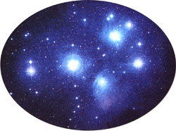
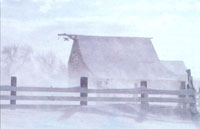
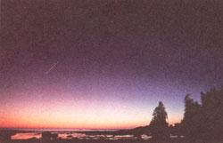

A royal red winter bird and the magic seven stars of Pleiades are this season's highlights
Through drifting snow and cutting sleet I've trudged and toiled my friends to greet; And tug'd beneath my lumb'ring gear, To wish you all a HAPPY YEAR.
- An Old Almanack,
January, 1824
Red Bird in the Snow
If you can afford to stay snug in your home on a winter day, one of the chief enjoyments you can have is looking out your window at a well-stocked and much-frequented bird feeder. And one of the best sights is seeing a dash of vivid and warm color brought to the pale landscape in the living form of that amazing American bird we call the cardinal.
No bird is more easy to recognize than the male cardinal, almost entirely red except for the conspicuous black mask on his face. The female cardinal's overall color has been called buff-brown and yellowish-olive, but what you notice most are the touches of red that it does have, on its crest, tail, and wings. Its red touches are beautifully artistic, in fact it's almost as if someone had used a paintbrush and stroked the color on here and there. The immature cardinals are also only partial in their redness.
But redness of feathers is not the only physical feature that makes cardinals attractive and likable. The crest on the head is impressive, of course. But have you ever noticed the color of these birds' beaks? The adults' beaks are pink, although I could swear that there is also some gold in the male's w (or perhaps the fe male's beak looks more pink in relation to her plumage). One way to tell immature male cardinals from females is by color of the beak-the young birds' beaks are rather colorless, sort of dusky.
Then there is the audible cardinal. Audubon himself called the cardinal a proud musician. In winter you're likely to hear just the note, not the full-fledged song, but even the note is very distinctive and beautiful. It is sometimes written as chip, but really has the quality of a small bell being rung. And if you win some cardinals over to become regular visitors to your feeder in winter, they may well stick around for the spring and treat you to further vocalizations. One song sounds something like "pretty, pretty, pretty," but more piercing and poignant is a series of sounds that descend into a "sweet slurring" and that people describe as cheer, cheer or dear, dear.
How can you attract cardinals? Their favorite food is sunflower seeds. It's also a help to have bushes (in winter, evergreen bushes) that they can find cover in with their food. If you succeed in keeping cardinals visiting until spring, you will eventually get to see one of their most endearing traits: the male cardinal ceremonially feeding his mate. Not many birds do this, and even fewer do it so frequently or conspicuously as the cardinal.
One hundred years ago, the cardinal was a southern bird. Now, adapting well to towns and gardens, it has spread to the northernmost U.S. and southern Canada, though in parts of the Southwest it is replaced by a bird called the pyrrhuloxia. The pyrrhuloxia has some similarities to the cardinal in appearance (though it is less red, with a different and lesser mask, and a yellow and sharply curved upper beak). But the songs and calls of the two species are said to be extremely similar.
The Sister Stars
More famous in legend and stupendously higher-flying is a strange and wonderful little bunching of stars in the shape of a tiny dipper. Many people think it is the Little Dipper. Actually, it is the Seven Sisters star cluster, best known as the Pleiades (PLEE-uh-deez).
Nothing in the heavens looks quite like the Pleiades. If your eyesight is poor or if the sky conditions aren't so good, you may think you are seeing a big patch of twinkling light. Proper vision and conditions reveal the individual stars. How many? Most folks spot about six with the naked eye. But this cluster is associated with seven sisters in Greek mythology, the children of Pleione and the giant Atlas. Where is the seventh Pleiad? Perhaps one of the stars has faded. Maybe people with sharper eyesight have always been able to see a seventh star that normal naked-eye vision could never confirm. Whatever the explanation, the legend of a lost Pleiad has sprung up in many cultures around the world. The 19th-century poet Alfred Austin wrote:
The Sister Stars that once were sevenMourn for their missing mate in Heaven. And there is far betterknown poetry that makes reference to the lovely Pleiades. In the Bible, the Lord asks Job from out of the whirlwind, "Canst thou bind the sweet influences of Pleiades, or loose the bands of Orion?" In Alfred Lord Tennyson's famous poem "Locksley Hall," he speaks of the twinkling and perhaps the hint of glowing gases around the Pleiades when he writes:
Many a night I saw the Pleiads,
rising thro' the mellow shade,
Glitter like a swarm of fireflies
tangled in a silver braid.
Cultures have based their entire calen dar on the time of night the Pleiades rise (There is this kind of connection between the cluster and the Druids' holiday that eventually became Halloween.). The emblem on Subaru cars is a stylized version of the Pleiades (The Japanese name for the Pleiades is Subaru).
In December and January the beautiful pocket of stars is found high in the southeast sky by 7 p.m. or 8 p.m. The Pleiades are located in the constellation of Taurus the Bull, not far to the right of a larger but more scattered cluster, the V-shaped Hyades (named for maidens who were Cousins of the Pleiades in Greek mythology). Binoculars reveal dozens and telescopes hundreds of the hot, young, blue stars of the Pleiades. Astronomers believe that maybe not long before the dinosaurs died off a cloud of gas in which these stars were forming was blown off, revealing them. It's possible that the Pleiades blossomed not long before the first true flowers did on Earth.
Almanac for December/January 1895-86
1 In 1831, extremely cold weather closed the Erie Canal for the entire month of December.
3 First Sunday in Advent.
6 FULL MOON (Moon Before Yule or Long Night Moon), 8:27 P.m. EST.
7 Pearl Harbor Day; probe from Galileo spacecraft enters atmosphere of Jupiter; launch of Apollo 17 in 1972, only night launch in the Apollo program.
8 Earliest sunset (4:35 P.M. EST) for 40 degrees North latitude (but this is for the center line of your time zone: east of the line, sunsets can come earlier; west of the line, later); the term "blizzard" first used in the Monthly Weather Review on this day in 1876.
10 Wyoming Day.
13 St. Lucy's Day, once thought to be the shortest day of the year; peak of the Geminid meteor shower tonight, but look in the few hours before bright moon rises around 11 P.M. On a clear night in the country dozens of "shooting stars" per hour might be seen this evening and tomorrow evening.
14 In 1972, Gene Cernan was the last man to walk on the moon-so far.
15 LAST QUARTER MOON, 12:31 A.M. EST; Bill of Rights Day; Halcyon Days begin (these days of supposedly peaceful weather are more likely to occur at this time in the Mediterranean, where the story of the mythical bird called the halcyon originated).
17 First powered flight, by Orville Wright, in 1903.
First day of Chanukah (begins at sunset on previous date); Sun enters constellation Sagittarius the Archer; Jupiter at conjunction with the Sun and unviewable.
19 Saturnalia (ancient Roman solstice festival).
20 Sleet, snow, and freezing rain knocked out power to hundreds of thousands of homes in the South this day in 1983.
21 NEW MOON, 9:29 P.M. EST.
22 Winter Solstice (winter begins in northern hemisphere), 3:17 A.m. EST; moon at closest for 1995, 7 A.M. EST; just after sunset, U.S. observers may see an extremely slender crescent moon very low in the west-southwest; this night, the Ursid meteor shower, "shooting stars" fly out from Ursa Minor in the north sky.
23 Freezing rain, sleet, and snow struck northern Florida on this date and next in 1989.
24 Christmas Eve.
25 Christmas Day.
26 Boxing Day (in Canada, United Kingdom, Australia).
28 FIRST QUARTER MOON, 2:06 P.M. EST.
29 Halcyon Days end (see Dec. 15 above).
30 Hurricane Alice, passing through the Leeward Islands, persisted from this date in 1954 until January 5, 1955, qualifying it as both the latest and earliest Atlantic hurricane on record.
31 New Year's Eve; the brightest star, Sinus, is at almost exactly its highest in the south at the minute the old year ends and the new year begins.
JANUARY 1996
1 New Year's Day.
2 Mercury at greatest evening elonga tion-look low in the west-southwest about 30 to 45 minutes after sunset to see this planet as a point of light for the next few nights. Mercury is the fastest planet, and the one closest to the sun in space (average distance from sun only 39% that of Earth's)-so temperatures there can reach about 800° F.
3 Tomorrow morning before dawn the peak of the Quadrantid meteor shower is spoiled by bright moonlight.
4 Earth at perihelion, closest to the sun in space for 1996, only about 91,400,400 miles from the sun. This is actually the closest we have gotten to the sun since 1972-but only by a tiny bit. And if we are now closer to the sun than we will be all year, why is it so cold in North America? Because the seasonal tilt of the Northern Hemisphere towards the sun (summer) or away from the sun (winter) is much more important to how warm we get than the minor changes in our distance from the sun. Even today earth is still at more than 98% of its average distance from the sun.
5 FULL MOON, 3:52 P.M. EST; Twelfth Night.
6 Epiphany; Eastern Orthodox Christmas.
7 Possible smaller January Thaw (see Jan. 20) sometime between now and January 10.
8 The following week may offer best chance for about 100 years for telescopes to show patches of sunlight leaking through the more translucent parts of Saturn's rings. Saturn is the bright point of fight well to the upper left of far more brilliant Venus, in the southwest after nightfall.
10 Second coldest game in National Football League history (minus 9°F) played in Cincinnati between Cincinnati Bengals and San Francisco 49ers on this day in 1982.
13 LAST QUARTER MOON, 3:47 P.M. EST.
First day of the Roman year 2749 A.U.C. (ab urbe condita, from the city's founding-the city being Rome, of course).
15 Martin Luther King Jr.'s birthday (observed).
18 Moon near Jupiter, low in east-southeast before dawn; Mercury at inferior conjunction with the sun, and hence is unviewable.
19 Look for ultra-slender moon very low in east-southeast about 30 minutes before sunrise; Moon at closest to Earth for 1996, 6 P.M.
20 NEW MOON, 7:51 A.M. EST; a worldrecord thin Moon may be glimpsed very low in west-southwest, about 20 minutes after sunset, by observers with excellent weather on the West Coast; a January Thaw may occur, especially in the eastern U.S., sometime between now and January 26.
22 Moon near Venus in southwest after sunset.
23 Moon near Saturn in southwest after sunset.
25 St. Paul's Day.
27 FIRST QUARTER MOON, 6:15 A.M. EST; Apollo 1 fire killed three astronauts during test on launch pad in 1968.
28 Space shuttle Challenger blew up, killing crew of seven in 1986; in 1979, a four-day blizzard began that caused some snowdrifts as high as 25 feet in Buffalo, N.Y.
30 In 1954, a tornado touched down in Nova Scotia on this winter day.
31 Brilliant Venus and tremendously dimmer Saturn form a majestic close pair in the southwest after nightfall; first successful U.S. launch of a satellite (Explorer 1) in 1958.
|
|
 |
 |
|
 |
|
|